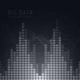

Кремниевые против углеродных
11 мая 1997г шахматный суперкомпьютер Deep Blue, разработанный компанией IBM, победил чемпиона мира Гарри Каспарова. А за 50 лет до этого, лучшие программисты и математики в серьез задавались вопросом: "Может ли компьютер победить человека в шахматы?". Слишком много комбинаций, не хватало вычислительных мощностей. Да и сейчас, тупым перебором в лоб задачу не решить. Требовалось оттачивать алгоритмы, на это ушли десятилетия. Со времен победы над Каспаровым, прошла еще пара десятков лет, теперь современный шахматный движок Stockfish легко уделывает любого гроссмейстера на простом домашнем компьютере.
В 2017 году AlphaZero - нейронка от Google - сыграла со Stockfish v8. Было проведено 100 партий. Не проиграв ни одной партии, выиграно 28 и сведено в ничью остальные 72. На гроссмейстерском уровне большинство партий заканчиваются в ничью, просто уже достигнут предел игры. Так что, такой счет означает не "они примерно равны, но AlphaZero немного выигрывает", а буквально разгром в сухую.
О применении компьютеров в трейдинге заговорили с тех самых пор как компьютеры появились у трейдеров, где-то в 60х. Массово вышли на рынок роботы после 2014г. Крупные фонды и умные одиночки уже давно экспериментируют с нейронными сетями в трейдинге. Но тут задача еще сложнее, еще больше комбинаций, высокий процент шума в данных. Пока, углеродные мозги трейдеров торгуют лучше, чем кремниевые. Но экстраполируя историю в шахматах, очевидно, это дело времени. Современные трейдеры уже давно отмечают, с каждым годом торговать становится все сложнее, как раз потому, что сделок совершенных роботами на бирже уже давно больше, чем сделок совершенных вручную.
Не думаю, что торговля в ручную будет полностью вытеснена на нашем веку, но ее доля продолжит снижаться, а способности кремниевых трейдеров продолжат расти. Время определиться, на какой стороне ты будешь.
AVIN
AVIN (от лат. Ars Vincere - искусство побеждать) — это кросплатформенная трейдинговая система. Написана на Rust, GUI на веб-технологиях, через Tauri. Содержит все, что нужно для алготрейдинга: от загрузки исторических данных и разработки стратегии, до запуска в боевой режим и построения отчетов.
Интерфейсы и принципы работы стремятся быть такими же простыми, как Pine от TradingView, но реализация на Rust дает возможность создавать сложные алгоритмы, и обеспечивает скорость достаточную для работы с тиковыми данными, кластерами и стаканом на grpc-стриме.
-

Data
Загрузка и обновление исторических данных: бары, тики, стаканы, SuperCandle. Пока с Московской биржи.
-
Core
Cтруктуры для удобной работы с данными на "трейдерском языке": график, бар, таймфрейм, ордер, брокер...
-
Strategy
Базовый интерфейс для создания своих стратегий. Стратегия работает одинаково в тестере и боевом режиме.
-

Tester
Простой, но очень быстрый бэк-тестер. Наглядные отчеты 15+ метрик, кривая капиталла, коэффициент Шарпа, Сортино...
-

Trader
Модуль управления роботами в боевом режиме. Пока доступно подключение только к Тинькофф брокеру через API.
-

Terminal
Терминал для торговли в ручную, с возможностью расширения под свои задачи через бинарные плагины.